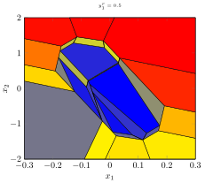
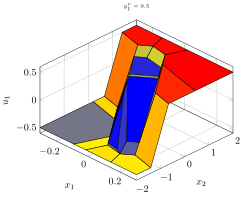

Explicit MPC
The resulting control law from MPC is given implicitly in terms of a solution to an optimization problem. The solution to this optimization problem does, however, have a closed-form expression when the system to be controlled is linear and time-invariant system, and the constraints are polyhedral. More concretely, the control law is piecewise affine over polyhedral regions[Bemporad02]; that is, the optimal control action $u^*$ is a pieacwise affine function of a parameter $\theta$, where $\theta$ contains the state, set points, measurable disturbances, and previous control actions. Explicitly the optimal control action is of the form
\[u^*(\theta) = K_i \theta + k_i,\quad \text{ if } \theta \in \Theta_i \triangleq \{\theta : A^{\theta}_i \theta \leq b^{\theta}_i\},\]
where the feedback gain $K_i$ and offset $k_i$ are defined for each critical region $\Theta_i$, which is defined by the matrix $A^{\theta}_i$ and offset $b^{\theta}_i$.
In explicit MPC these feedbacks and regions are stored to be used online to find an optimal control action in a two step procedure:
- Find the index $j$ for which $\theta \in \Theta_j$
- Apply the control action $u = K_j \theta + k_j$
If step 1 is done correctly, this can save a lot of computations, since an optimization solver does not have to be embedded. A drawback is, however, that the number of regions grows rapidly as the problem dimension increase, resulting in a significant memory footprint (since all feedbacks + regions needs to be stored in memory.)
Computing the explicit solution can be quite challenging in its own right. LinearMPC.jl make use of the state-of-the-art multi-parametric programming solver ParametricDAQP.jl[Arnstrom24]
For a given MPC controller mpc, an explicit MPC controller can be created with
empc = LinearMPC.ExplicitMPC(mpc)The resulting critical regions can be found with empc.solution.CRs, where the field Ath and bth in a critical region define the region itself, and the field z gives the feedback. Specifically, K = z[1:end-1,:]' and k=z[end,:]', so the optimal control u can be computed for the parameter θ with u=z'*[θ;1].
Parameter range
Running the code above gives the warning "No paramter range defined". This is because we have not specified where in parameter space the solution should be computed. By default, a box with limits $[-100,100]$ is used, but this might be too big or too small of a volume. Instead, users can provide a ParameterRange which defines where in parameter space the solution should be computed. For example
parameter_range = LinearMPC.ParameterRange(mpc)
parameter_range.xmin[:] .= -1
parameter_range.xmax[:] .= 1will consider states in the unit box. Similarly, one can modify the range for
- references by modifying the field
rminandrmax - disturbances by modifying the field
dminanddmax
Computing control
To efficiently compute a control action using explicit MPC controller, LinearMPC.jl constructs a binary search tree[Tondel03]. This can be done with
LinearMPC.build_tree!(empc)A binary search tree will also be compuetd by passing the optional argument buil_tree to EMPC:
empc = LinearMPC.ExplicitMPC(mpc;build_tree=true)When a binary search tree has been formed , a control can be computed, similar as for a normal MPC struct, with the function compute_control. Given a state x and setpoint r, the corresponding control is computed with
x = LinearMPC.compute_control(empc,x;r=r)Code generation
C code for an explicit MPC controller can be generate with codegen. The call
LinearMPC.codegen(empc;dir="code_dir")will generate C code in the directory code_dir.
The main function of interest is mpc_compute_control(control, state, reference, disturbance). This function computes the optimal control given the current state, reference, and measured disturbances disturbance, which are all floating-point arrays. The optimal control is stored in the floating-point array control.
Example
To show some of the functionality, we consider he explicit MPC controller for control a DC servo motor, also considered as an example in the MATLAB MPC Toolbox here.
This is an example that is available in mpc_examples, so a template for the MPC controller can be created with
using LinearMPC
mpc,para_range= LinearMPC.mpc_examples("dcmotor")Note that mpc_examples also provide a template for the parameter range. We do, however, want to ensure that the exlicit MPC controller is computed for $|x_1| \leq 0.3$ and $|x_2| \leq 2$, which we can ensure with
para_range.xmin[1:2] = -[0.3;2.0]
para_range.xmax[1:2] = [0.3;2.0]Next, we compute an explicit controller with
empc = LinearMPC.ExplicitMPC(mpc;range=para_range)If we want to visualize a slice of the resulting polytopic partition, we can use the function plot_regions. This takes in the names of the parameters to be plotted as argument. We can also fix other parameter with optional arguments (which are by default fixed at 0.) If we, for example, want to plot a 2D-slice of the partition in the first and second state, when the reference is fixed at $r=[0.5,0.0]$, we run
LinearMPC.plot_regions(empc,:x1,:x2,r=[0.5,0.0])
Similarly, if we want to visualize the feedback law, we can do that with plot_feedback, where one also has to enter the name of the input to plot (in this case :u1).
If we, for example, want to visualize the feedback for the first input for different $x_1$ and $x_2$, when the reference is fixed at $r=[0.5,0.0]$, we run
LinearMPC.plot_feedback(empc,:u1,:x1,:x2,r=[0.5,0.0])
- Bemporad02Bemporad, Alberto, et al. "The explicit linear quadratic regulator for constrained systems." Automatica 38.1 (2002): 3-20.
- Arnstrom24Arnström, Daniel, and Axehill, Daniel "A High-Performant Multi-Parametric Quadratic Programming Solver," 2024 IEEE 63rd Conference on Decision and Control (CDC), Milan, Italy, 2024, pp. 303-308
- Tondel03Tøndel, Petter, Tor Arne Johansen, and Alberto Bemporad. "Evaluation of piecewise affine control via binary search tree." Automatica 39.5 (2003): 945-950.